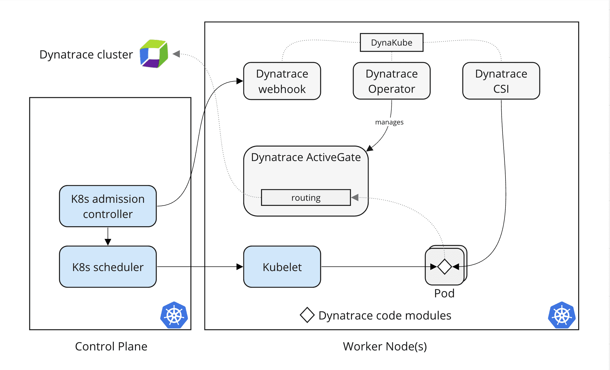
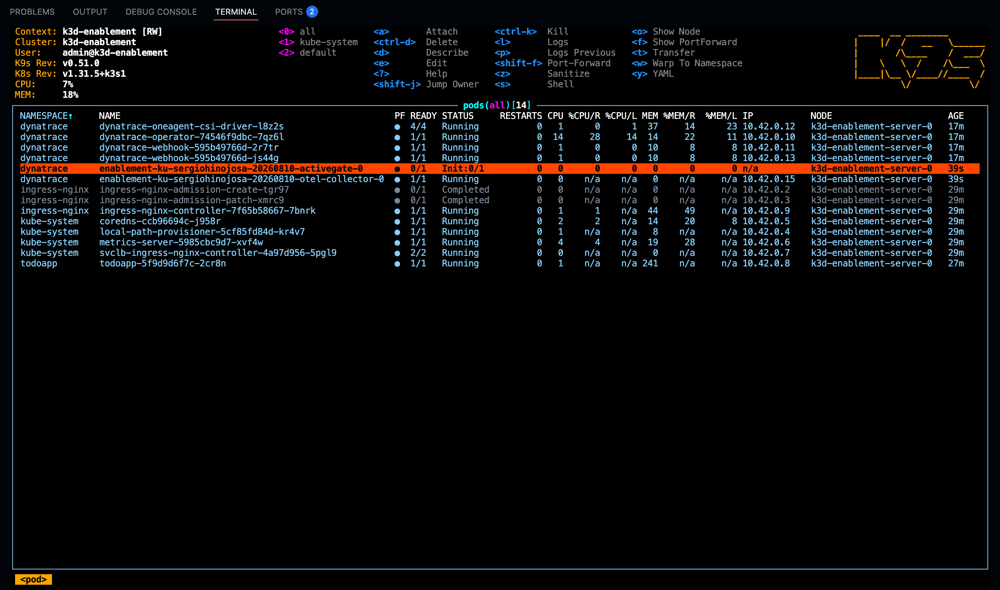

Section 2 — Deploy the DynaKube#
The DynaKube is a Kubernetes Custom Resource that tells the Dynatrace Operator how to instrument your cluster — which tenant to connect to, which components to deploy, and how to configure them. Without a DynaKube, the operator is installed but idle.
How it works#
The DynaKube custom resource is the single source of truth for how Dynatrace monitors your cluster. It tells the operator which monitoring mode to use, which tenant to connect to, and which optional components to enable.
When you deploy the DynaKube with Application Observability in this scenario#
- ActiveGate — routes observability data from your cluster to the Dynatrace tenant, acting as a secure proxy.
- Code Modules — injected into your application pods via the CSI driver to enable deep code-level monitoring and observability.
- OpenTelemetry Collector — deployed to collect and forward OpenTelemetry signals (traces, metrics, logs) to Dynatrace.
- Log Monitoring Module — deployed to capture and ingest container and application logs.

Step 1 — Open the Dynatrace UI#
Normally you would navigate to:
Infrastructure → Kubernetes → Connect cluster
Click Connect cluster and follow the wizard. Dynatrace will generate two manifests:
- A
Secretcontaining your tenant URL, operator token, and ingest token - A
DynaKubeCR with the recommended configuration for your cluster
But since this is a managed environment, we have everything prepared for you. Just deploy the generated dynakube.yaml file in your cluster.
Step 2 — Apply the generated manifests#
Copy the kubectl apply command and run it in the Terminal:
Tenant credentials are pre-loaded
Your environment already has DT_ENVIRONMENT, DT_OPERATOR_TOKEN, and DT_INGEST_TOKEN set. The Dynatrace wizard will detect your tenant from these variables if you are signed in.
Step 3 — Wait for ActiveGate and pods#
After applying the DynaKube, the operator provisions an ActiveGate pod and the CSI driver. On a single-node cluster, the ActiveGate pod will start first, followed by the CSI components.
Wait until all pods show Running before continuing.
Watch with K9S
K9S is a terminal-based Kubernetes UI that lets you watch and manage your Kubernetes clusters with style. Launch it with k9s, then navigate to the dynatrace namespace to see the dynatrace components updating live.
| Action | Command / Shortcut |
|---|---|
| Launch K9S | k9s |
| List pods in a namespace | :pods → type namespace filter, e.g. dynatrace |
| List all namespaces | :namespaces |
| View DynaKube custom resource | :dynakube → select the resource to inspect it |
| Describe a deployment | :deployments → select one → press d |
| Shell into a container | Select a pod → press s |
| Quit | :q or Ctrl+C |

Validation — DynaKube object exists#
Validation — ActiveGate is Running#
Your cluster is already capturing logs#
Here is the part people expect to be harder than it is: there is nothing left for you to do.
The DynaKube you just applied enables the Log Monitoring module. The operator rolls out a log monitoring DaemonSet — its pods are named after your DynaKube, ending in -logmonitoring — one pod per node, and that pod tails the standard output of every container on the node straight from the node's log files.
That means log collection needs:
- no application restart — the log module reads files the container runtime already writes;
- no code injection — it never touches your application process;
- no change to your application — no logging library, no sidecar, no log driver.
This is worth pausing on, because the next section is different: traces do require a restart, because the agent has to be injected into the process at startup. Logs come from outside the process; traces come from inside it.
Validation — the log module is running#
Validation — logs are arriving in Grail#
The todoapp has been running since your environment started, and has never been restarted or instrumented — so any log line it produces is proof that the log module alone is doing the work.
The endsWith(k8s.cluster.name, "{{DT_SESSION_ID}}") filter scopes the query to your cluster. Every session gets a unique cluster identity ending in your session id, so classmates running this training against the same tenant never pollute your results.
The query below counts the log lines collected from your cluster in the last 30 minutes, grouped by namespace and log level. The result is a small table that proves something bigger than "logs arrive": every namespace on the cluster is shipping logs — the demo app, the Dynatrace components, the system namespaces — all without touching a single one of them.
fetch logs, from:now()-30m
| filter endsWith(k8s.cluster.name, "{{DT_SESSION_ID}}")
| summarize count = count(), by: {namespace = k8s.namespace.name, level = loglevel}
| sort namespace asc, count desc
Why endsWith and not ==
Your cluster is named after the training plus your session id, but Kubernetes caps how long that name can be — so the training half gets truncated while your session id stays intact at the end. endsWith matches the part that is guaranteed to survive.
Explore your cluster in Dynatrace#
Once the ActiveGate is running, your cluster is visible in the Dynatrace Kubernetes app. Open it to see live cluster topology, node health, and workload status.